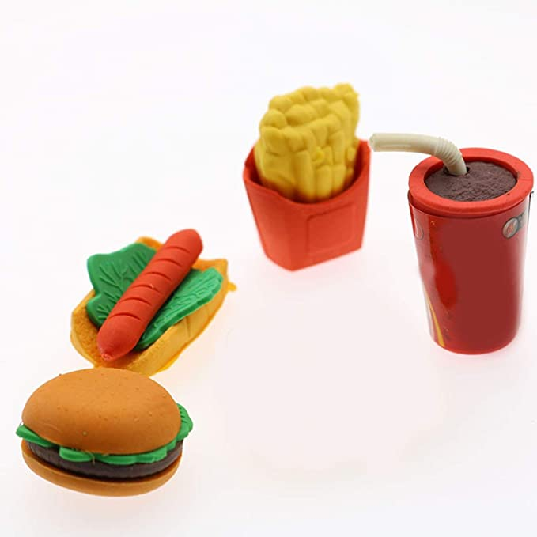

<ion-header>
  <ion-toolbar>
    <ion-buttons slot="start">
      <ion-back-button defaultHref="/perfil"></ion-back-button>
    </ion-buttons>
    <ion-title>
      Menú del día
    </ion-title>
  </ion-toolbar>
</ion-header>
 <ion-content>
  <ion-list>
    <ng-container *ngIf="!almuerzoUser || almuerzoUser.length == 0">
      <div *ngFor="let n of [0]" padding>
        <ion-skeleton-text></ion-skeleton-text>
        <p>Sin Datos
          <ion-skeleton-text class="text-skeleton"></ion-skeleton-text>
        </p>
      </div>
    </ng-container>
    <ion-item-sliding *ngFor="let alm of almuerzoUser">
      <ion-card button [routerLink]="['/lista-menus', alm.id]">
        <ion-card-header >
          <div class="imagen">
            
          </div>
        </ion-card-header>
        <ion-card-subtitle>
          &nbsp;
          <h2>&nbsp;
            <ion-icon name="person"></ion-icon>
            Tipo: {{alm.tipoAlmuerzo}}
          </h2>
          <h6>&nbsp;
            <ion-icon name="phone-portrait"></ion-icon>
          Entrada: {{alm.entradaAlmuerzo}}
          </h6>
          <h6>&nbsp;
            <ion-icon name="restaurant"></ion-icon>
          Segundo: {{alm.segundoAlmuerzo}}&nbsp; 
          </h6>
          <h6>&nbsp;
            <ion-icon name="time"></ion-icon>
          Bebida: {{alm.jugoAlmuerzo}}&nbsp; 
          </h6>
          <ion-item>
            <ion-button fill="outline" slot="end"><ion-icon name="pricetag" slot="start"></ion-icon>{{alm.precioAlmuerzo}}
            </ion-button>
          </ion-item>
        </ion-card-subtitle>
      </ion-card>

      <!-- <ion-item lines="inset" button [routerLink]="['/lista-menus', alm.id]">
        <ion-label>
          {{ alm.tipoAlmuerzo }}
        </ion-label>
        <ion-note style="font-size: 20px;" slot="end" color="primary">{{ alm.precioAlmuerzo }} &nbsp;$</ion-note>
      </ion-item> -->
 
      <ion-item-options side="end">
        <ion-item-option (click)="onRemove(alm)" color="secondary">
          Check
          <ion-icon name="checkmark" slot="end"></ion-icon>
        </ion-item-option>
      </ion-item-options>
    </ion-item-sliding>
  </ion-list>
 <ion-fab vertical="bottom" horizontal="end" slot="fixed">
    <ion-fab-button routerLink="/lista-menus" routerDirection="forward">
      <ion-icon name="add"></ion-icon>
    </ion-fab-button>
  </ion-fab>
 </ion-content>